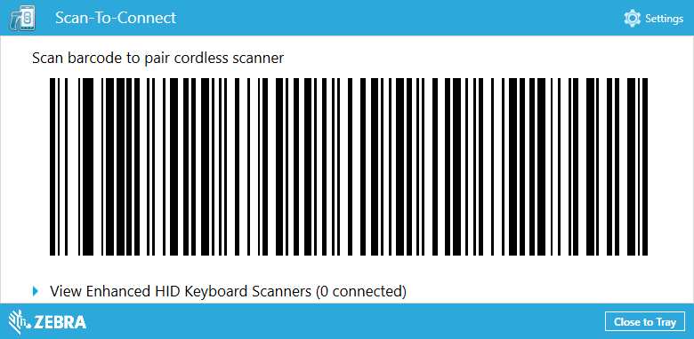
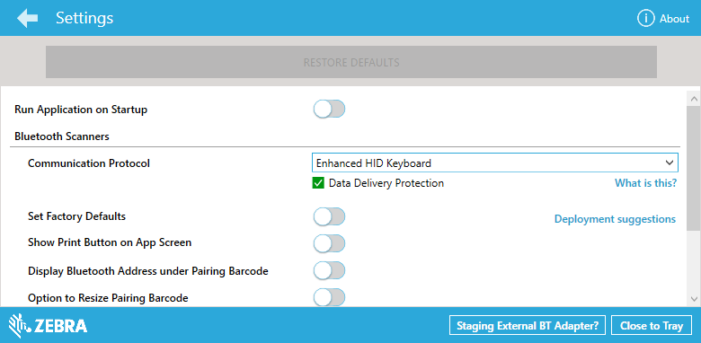
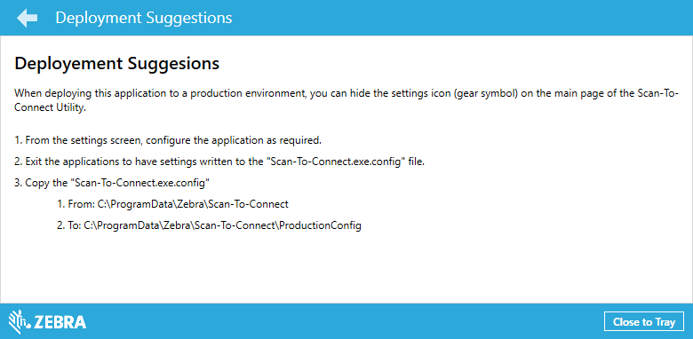
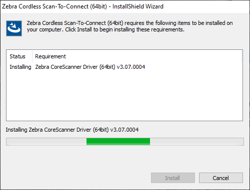
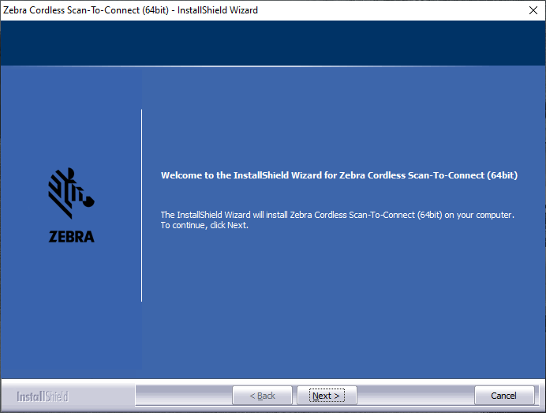
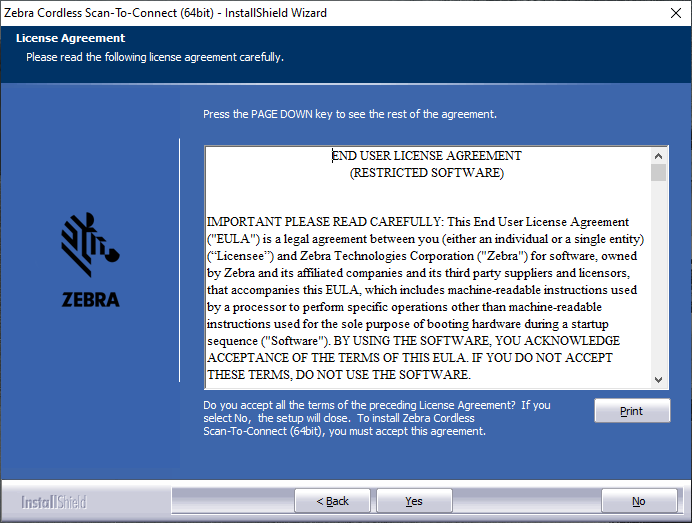
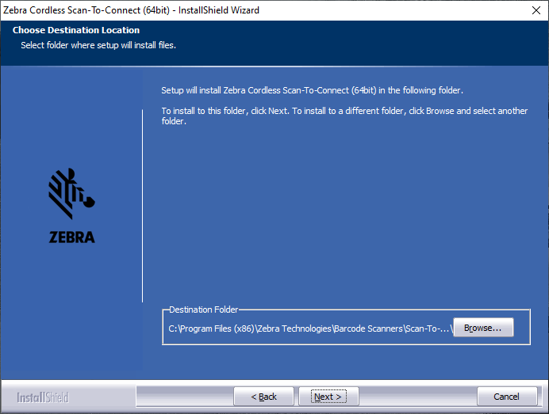
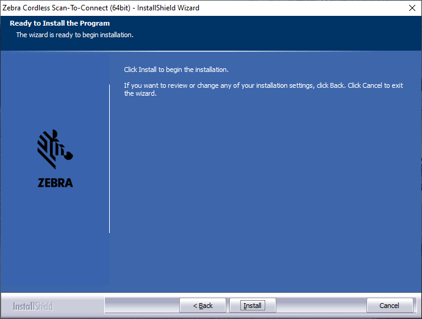
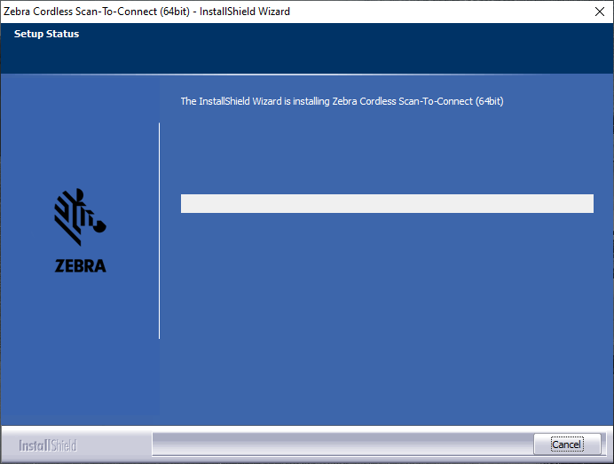
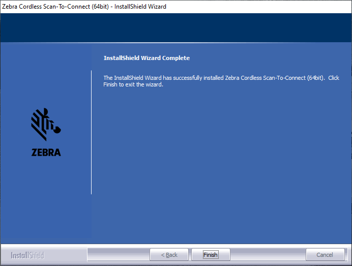

Overview
The Scan-To-Connect utility automatically determines the PC/tablet’s Bluetooth MAC address and embeds that information into the STC pairing bar code. Scanning this STC pairing bar code establishes a connection between your cordless Bluetooth scanner and PC/tablet. The Bluetooth connection is made seamlessly using the computer’s pre-existing Windows Bluetooth driver.
In addition to containing the PC/tablet’s Bluetooth MAC address, the STC pairing barcode also contains a setting to program your scanner’s communication protocol and optionally reset your scanner back to factory defaults.
STC Utility UI Walkthrough and Configurations
Home Screen
Below is the main window of Scan-To-Connect Utility for Windows which display the pairing barcode.

Figure 1: Scan-To-Connect Utility for Windows Home Screen
This screen contains,
- STC paring barcode.
- Settings button to navigate to settings page (Can be hidden – See Setting page / Deployment suggestions)
- Application "Close to Tray" button.
- List of Enhanced HIB Keyboard Scanners.
Settings Screen
Below is the settings page of the Scan-To-Connect Utility for Windows.

Figure 2: Scan-To-Connect Utility for Windows Settings Screen
This screen contains,
- Back button to navigate to Home screen.
- About button to navigate to About screen.
- Restore Default button to revert all your scanner’s parameter settings back to their factory default state.
- The Communication Protocol drop down list allows you to select the required protocol for the scanner. Your communication protocol selection will automatically be built into the STC pairing barcode.
- Set factory default toggle switch to set the scanner to its factory defaults settings upon reading the paring barcode. This configuration only available when the Barcode Type is set to ScanToConnect suite.
- Show Print Button on App screen is to configure whether to show the print button on the Home page.
- Display Bluetooth Address under pairing barcode toggle switch is to configure whether the host Bluetooth address to be display under the paring barcode on Home page.
- Option to resize pairing barcode toggle switch is to configure the whether the slider control to display on Home page to change the size of paring barcode.
Deployment Suggestions Screen
Suggestions on how to deploy the STC utility can be found on the application by clicking on the “Deployment Suggestions” link on the settings page.

Figure 3: Scan-To-Connect Utility for Windows Deployment Suggestions Screen
To do a deployment in a productions environment:
- From the settings screen, configure the application as required.
- Close the application to have the settings written to the “ScanToConnectWindows.exe.config” file.
-
Copy the "ScanToConnectWindows.exe.config",
- From: "C:\ProgramData\Zebra\Scan-To-Connect\" directory
- To: "C:\ProgramData\Zebra\Scan-To-Connect\ProductionConfig\" directory
Installing the Solution
Install Scan-To-Connect
The following steps show the process to install Scan-To-Connect Utility for Windows.
- Go to https://www.zebra.com/us/en/support-downloads/software/utilities/cordless-scantoconnect.html
- Scroll down to the Software section and select and run the relevant OS download for your PC.
-
The Zebra CoreScanner Driver is a prerequisite for both the 32bit and 64bit setup programs. The installation process checks for the CoreScanner driver on the target PC. If the CoreScanner driver is not present, or is outdated, clicking Install adds updated drivers before installing the Scan-To-Connect package.

Figure 4: Installation of Zebra CoreScanner Driver Window
The Microsoft .NET Framework is also a prerequisite for Zebra Scan-To-Connect Utility for Windows. If .NET is not available in the system, the installer lists it as a requirement and installs it as part of the setup process.
-
Click Next in the Welcome window.

Figure 5: Welcome Window
-
Review the license agreement and click Yes to accept.

Figure 6: License Agreement Window
-
The user can select the destination folder by clicking Browse and selecting the drive and folder in which to install the Scan-To-Connect Utility for Windows.

Figure 7: Destination Folder
-
Click Install to install Scan-To-Connect Utility for Windows.

Figure 8: Ready to Install Window
-
As the installation proceeds, the status displays.

Figure 9: Installation Status Window
-
When the installation is complete, the following window displays. Click Finish.

Figure 10: Installation Complete Window
Silent Unattended Installation of the Zebra Scan-To-Connect Utility for Windows
The CoreScanner driver require the Microsoft 2017 C++ Redistributable Package which automatically installs if it is does not already exist on the host PC. For an unattended installation, a complication arises if the 2017 C++ Redistributable is not pre-installed. By default, Microsoft triggers a reboot of the PC after the C++ Redistributable installation. In this case, a reboot is injected into the overall silent install process (which may then also require a login).
To avoid the interruption, the 2017 C++ Redistributable can be downloaded from Microsoft (see links below) and pre-installed silently while suppressing the reboot using the command line switches /install /quiet /norestart. This delays the required reboot and allows custom silent CoreScanner and Scan-To-Connect Utility installs to be performed using subsequent commands.
The Visual C++ Redistributable for Visual Studio 2017 can be downloaded from the Microsoft website (see links below). The appropriate file vc_redist.x86.exe (32bit version) or vc_redist.x64.exe (64bit version) must be selected and downloaded. The command line to perform its install silently without reboot is:
vcredist_x86.exe /install /quiet /norestart
or,
vcredist_x64.exe /install /quiet /norestart
The required reboot must be performed at the end of the overall installation process to ensure correct operation.
The Scan-To-Connect Utility for Windows and prerequisite CoreScanner driver are packaged using the Flexera InstallShield installer program. The installer program supports command line switches to record custom responses that can be used to create a silent install response file. These response files, ending in the file extension .iss, may then be used to perform a silent installation of the CoreScanner driver and Scan-To-Connect Utility components on production PCs.
Silent Install Command Line Options
Command Line Switch Description
Table 1: Command Line Switch Description
| Switch |
Description |
| -s |
Silent mode. The -s switch runs the installation in silent mode using the responses contained in a recorded response file. |
| -r |
Record mode. The -r switch displays all the setup dialogs and records the chosen responses in the file specified with the -f1 switch described below. |
| -f1 |
Specify custom response file name and path. The -f1 switch specifies where the response file is located for the -s switch, or where it should be created when using the -r switch. Specify an absolute path; using a relative path yields unpredictable results. |
| -f2 |
Specify alternative log file name and path. When running an installation in silent mode (using the -s switch), the log file is created by default in the same directory and with the same name (except for the extension) as the response file. The -f2 switch enables you to specify an alternative log file location and file name. Specify an absolute path; using a relative path yields unpredictable results. |
When executed from a command prompt, the example below uses the -r and -f1 switches to record your responses to the setup prompts into a custom response file:
"Zebra_CoreScanner_Driver_(64bit)_v3.07.0004.exe" -r -f1"c:\path\CSsetup.iss"
The responses chosen using the command above are saved in the specified response file and can then be used as input to silently install the CoreScanner with those chosen responses on production PCs.
The next example shows how the -s switch uses the response file created with the previous command to perform the silent install:
"Zebra_CoreScanner_Driver_(64bit)_v3.07.0004.exe" -s -f1"c:\path\CSsetup.iss"
Note that there is no space between the -f1 switch and first quotation mark for the custom response file. Additionally, you would perform the above steps for the silent installation of the Scan-To-Connect Utility for Windows. Record the Scan-To-Connect Utility for Windows response file using the -r switch on a PC that does not yet have Scan-To-Connect Utility for Windows installed:
"Zebra_Cordless_Scan-To-Connect_(64bit)_v4.02.0006.exe" -r -f1"c:\path\STCsetup.iss"
Then use that resulting response file with the -s switch to install silently on other PCs:
"Zebra_Cordless_Scan-To-Connect_(64bit)_v4.02.0006.exe" -s -f1"c:\path\STCsetup.iss"
If necessary, the -r switch option can also be used to record a custom response file for a silent removal of a program by running the command on a PC that has that program already installed.
2017 C++ Redistributables v14.16.27012 Download links:
x86: https://download.visualstudio.microsoft.com/download/pr/d0b808a8-aa78-4250-8e54-49b8c23f7328/9c5e6532055786367ee61aafb3313c95/vc_redist.x86.exe
x64: https://download.visualstudio.microsoft.com/download/pr/9fbed7c7-7012-4cc0-a0a3-a541f51981b5/e7eec15278b4473e26d7e32cef53a34c/vc_redist.x64.exe
Components and Folder Paths
Table 2: Scan-To-Connect Utility for Windows Components
| Component |
Description |
Installation Path |
| STC folder |
STC installation folder. User can customize this location. |
x86 - %ProgramFiles%\Zebra Technologies\Barcode Scanners\Scan-To-Connect
x64 - %ProgramFiles(x86)%\Zebra Technologies\Barcode Scanners\Scan-To-Connect
|
| Configuration files |
Default location of configuration Files |
ProgramData\Zebra\Scan-To-Connect |
| Configuration files (production) |
Default location of the production configuration Files |
ProgramData\Zebra\Scan-To-Connect\ProductionConfig |